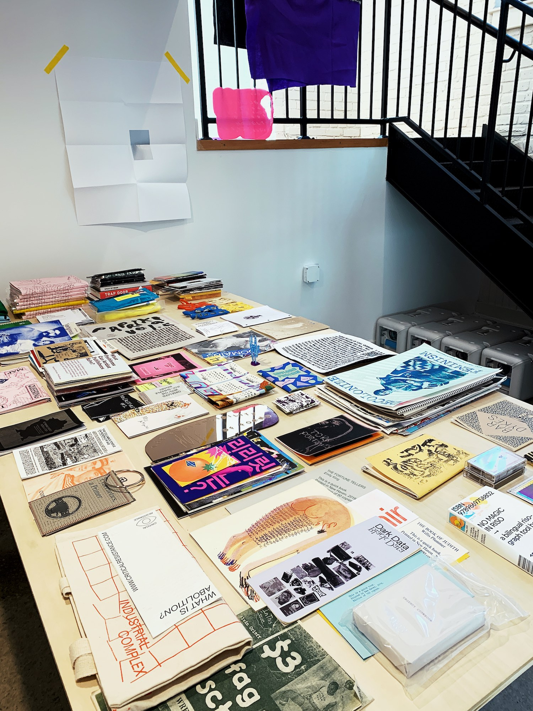
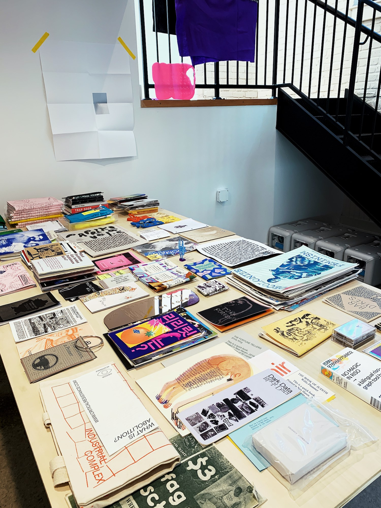
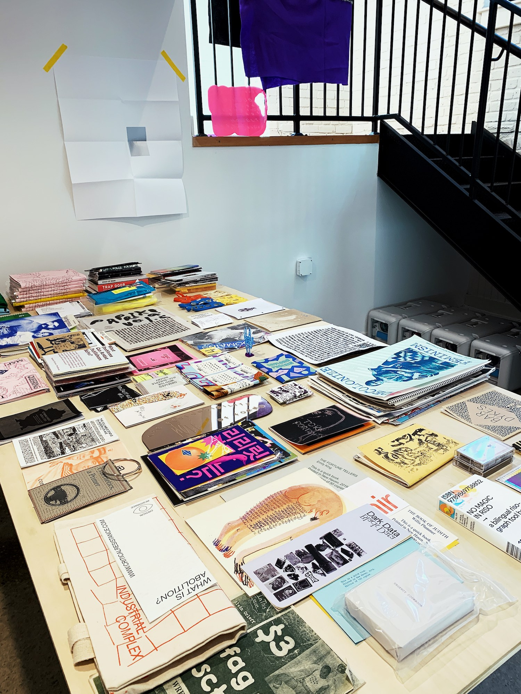

Queer.Archive.Work
Providence, RI
 

Queer.Archive.Work is a 501(c)(3) nonprofit reading room, publishing studio, and project space serving Providence, RI and beyond.
QAW was founded in 2020 to support artists and writers with free, open access to space and resources for experimental publishing, with a special focus on queer practices. QAW includes a non-circulating library of books, zines, and objects, a risograph printer, and project installation space. QAW strives to be accountable, to center marginalized voices through intersectional work, and to cultivate inclusive, safe platforms for independent, queer publishing.
All visitors are welcome—this is an accessible community space, open and free for all (please see our code of conduct). Come by to chat about your work, use the risograph printer, or spend time in the reading room. We’re at 40 Sprague Street, #1G Providence, RI 02907, on the west side of Providence, in a building that used to be a rubber bicycle tire factory. Attendant: Paul Soulellis (send me a note if you’d like to visit!)
📣QAW News📣
OPEN HOUSE FREE PRINTING!
QAW’s risograph printer is open, free, and available for casual printing for the next few weeks, through February 7. Make zines, flyers, posters, or anything else up to 11 x 17. Inks available: black, fluorescent pink, dark red, teal, and purple. Limited free paper available, or bring your own. Priority given to LGBTQIA+, POC, non-RISD, non-Brown U. folks. Email with any questions and to let me know if you want to come by.
✨✳QAW GRANTS AND RISO RESIDENCIES✳✨
🌈Starting spring 2020🌈


📒QAW PUBLISHING📒
URGENCY READER (December 2019)
QUEER.ARCHIVE.WORK 3 (September 2019)
QUEER.ARCHIVE.WORK 2 (January 2019)
QUEER.ARCHIVE.WORK 1 (September 2018)
💥QAW WORKSHOPS💥
Image Text Ithaca (June 2019)
Urgency Lab RISD (Spring 2019)
INTERRUPT V (February 2019)
NY Tech Zine Fair at SFPC (December 2018)
Hauser & Wirth/MoMA PS1 Bookstore (August 2018)

OPEN HOUSE FREE PRINTING!
QAW’s risograph printer is open, free, and available for casual printing for the next few weeks, through February 7. Make zines, flyers, posters, or anything else up to 11 x 17. Inks available: black, fluorescent pink, dark red, teal, and purple. Limited free paper available, or bring your own. Priority given to LGBTQIA+, POC, non-RISD, non-Brown U. folks. Email with any questions and to let me know if you want to come by.
✨✳QAW GRANTS AND RISO RESIDENCIES✳✨
🌈Starting spring 2020🌈
📒QAW PUBLISHING📒
URGENCY READER (December 2019)
QUEER.ARCHIVE.WORK 3 (September 2019)
QUEER.ARCHIVE.WORK 2 (January 2019)
QUEER.ARCHIVE.WORK 1 (September 2018)
💥QAW WORKSHOPS💥
Image Text Ithaca (June 2019)
Urgency Lab RISD (Spring 2019)
INTERRUPT V (February 2019)
NY Tech Zine Fair at SFPC (December 2018)
Hauser & Wirth/MoMA PS1 Bookstore (August 2018)